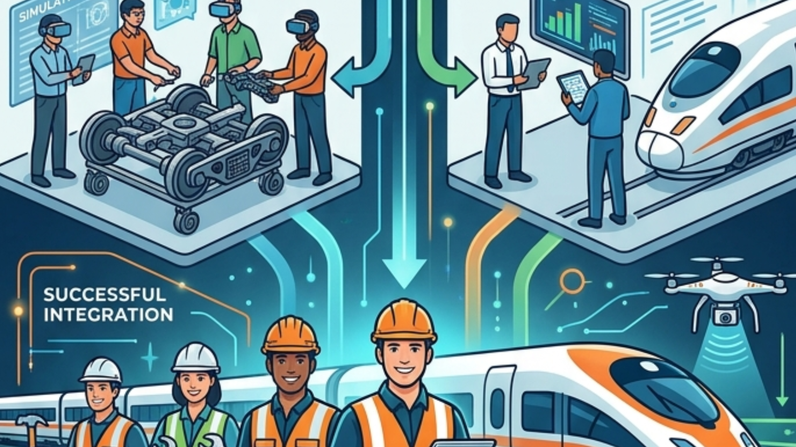
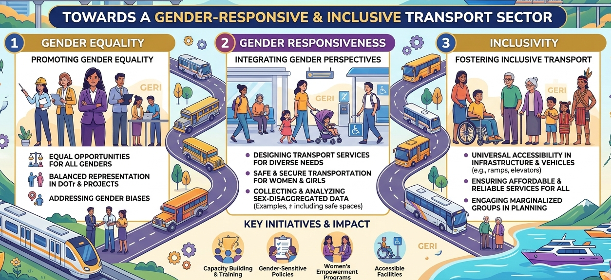
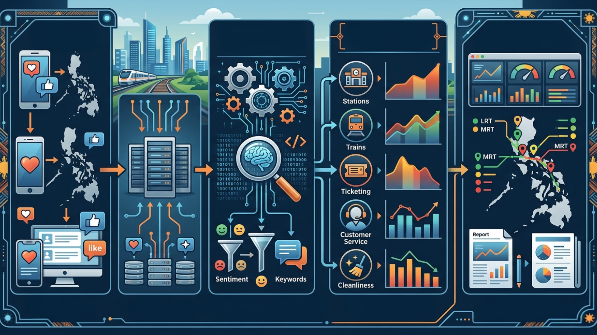
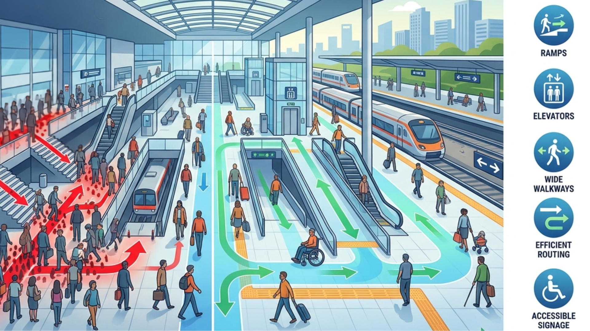
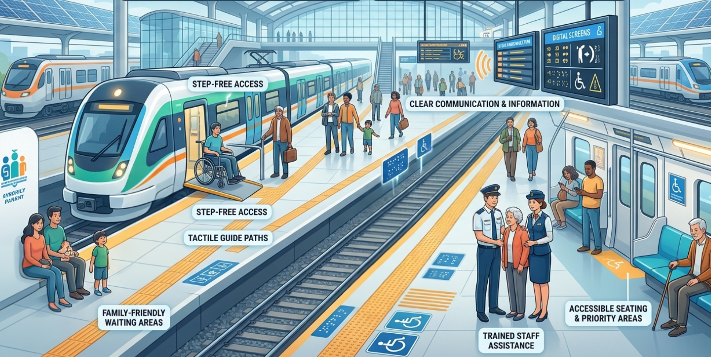
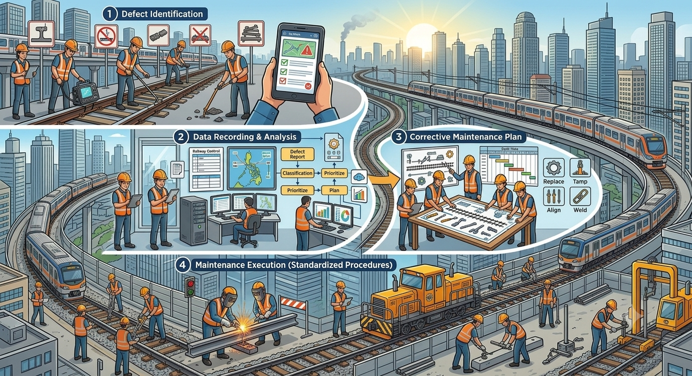

REAP Knowledge Hub
Available Publications
Digital ArchivesRecommendation and Implementation of Road Safety as Economic Benefit to Rail Projects
Miguel Martin M. Dizon
Planning and Development Project Office
To have the DOTr, and subsequently NEDA, adopt a standard methodology, intended to be developed during the program, in considering Road Safety as Economic Benefit to Rail Projects during investment evaluation within 15 months upon completion of the scholarship program.

Advancing Maintenance Competencies in Railway through Development of a Systematic Framework and Evaluation Criteria for the Philippine Railways Institute (PRI)


Renz Jonas H. Gador
Philippine Railways Institute
The objective is to develop an evaluation framework for maintenance
inspection, specifically a risk-based maintenance prioritization
frameworks that employs a six-level evaluation (AA to S) to classify
defects based on urgency and severity. Then to operationalize this
framework, the applicant plans to present it to the organization's office
and proposes to integrate it into a new maintenance-focused training
module through the Capacity Development Training (CDT) course
offered by the Philippine Railways Institute (PRI). The module will aim
to enhance the competencies of railway personnel by improving
maintenance inspection practices and promoting safer, more reliable
operations.

Evaluating the Institutional Capacity of the Department of Transportation's (DOTr) Gender and Development (GAD) Technical Working Group (TWG) in Advancing Gender Equality, Responsiveness, and Inclusivity in the Philippine Transportation System.


Mary Bernadette E. Reyes
Rail Transport Project Development Division
To assess the institutional capacity and knowledge of the DOTr's GAD
TWG in Gender Equality, Responsiveness and Inclusivity in the
Philippine Transportation System using the Department Order ("DO")
No. 2012-09 entitled "Implementing Rules on the Harmonized GAD
Guidelines for Project Development, Implementation, Monitoring and
Evaluation"

Social Signals: Analyzing Railway Service Quality in the Philippines Using Social Media Data and Natural Language Processing (NLP)


Patrick Jose C. Roxas
Philippine Railway Institute - Research and Development
The study aims to improve the quality of railway transportation service by
analyzing commuter complaints and feedback on key service attributes
such as but not limited to punctuality, cleanliness, safety, and customer
service. This will be achieved by using Natural Language Processing
(NLP) to process user-generated data from social media platforms such as
X (formerly Twitter) and Facebook within 2 years. By extracting actionable
insights from public feedback and commuter sentiments shared online, the
methodology will focus on leveraging public engagement and the socia
representation of commuters to address specific service shortcomings. The
derived insights will be used to formulate or amend existing publi
policies to make them more passenger centric.

Upgrading Railway Stations accessibility through Integration of Policy Recommendations and Training Materials Based on Pedestrian Flow Analysis


Augustin B. Soriano Jr.
Philippine Railways Institute
To train railway station supervisors in Metro Manila on the use of new
accessibility guidelines and procedures based on pedestrian flow analysis by
2029. Trainees are measured by conducting Comprehensive Examination after
conduct of training with the passing score of 70%. This training will directly
support the implementation of recommended policy in railway stations in metro
manila.
Multi-Criteria Decision Analysis Framework for Sustainability Assessment of Prospective Port Infrastructure and Maritime Fleet Investments in the Philippines


Walleastein L. Sigui
Planning and Development Office
The study aims to develop a balanced framework for decision making by
public managers and policy makers, particularly for the Philippines
Department of Transportation ("DOTr"), in systematically selecting the
optimum sustainable investment option based on the priorities set forth in
its mandate, its global and national commitments, and its overall policy
direction. The study shall also attempt to propose sustainable thresholds
to classify which options are acceptable from a government's efficiency
point of view1. The multi-criteria decision analysis framework shall be
structured based on selected financing track (i.e., government-financed,
locally-funded ("GF-LF"); government-financed, foreign-assisted ("GF-
FA"); and public-private partnerships ("PPP")). The criteria shall factor in
various economic, social, environmental, and institutional/political
considerations , weighted accordingly based on an assessment to be
conducted as part of the study.

Inclusive Design Enforcement Plan for the Railways Sector


Salima B. Awis
Office of the Undersecretary for Railways
This aims to provide a systematic and effective enforcement plan of
inclusive design for the Railways Sector's different projects through
the realization of the two recently published technical standards for
inclusivity, Batas Pambansa 344 - Accessibility Law Revised
Implementing Rules and Regulation, and Transit Facility Design
Standards: Inclusive Facilities.

COMMUNIC-ACTION Manual: Integration of Strategic Interdepartmental Communications in the Department of Transportation (DOTr)


Chlarizel Dianne H. Pangan-Villa Agustin
Information Division
Integrate interdepartmental communication within the Department of
Transportation (DOTr) through improved and enhanced coordination
between the DOTr-Central Communications Team and its sectoral and
attached agencies, with a unified, standardized communication system,
resulting in cohesive and consistent dissemination of information to the
public and transport stakeholders within a year of the implementation of the
REAP - leading to enhanced public trust, engagement, and Department's
credibility. This is slated to be the pioneering blueprint and roadmap for the strategic interdepartmental communication plan of the Department, encompassing
framework and protocols.
Information and Communications Campaign for the Adoption of Electric Vehicles as a Sustainable Transportation Alternative


Ana Dominique M. Consulta
Information Division
This campaign aims to launch a comprehensive communications initiative to increase public awareness and interest in electric vehicles (EVs), particularly among consumers, by leveraging compelling content and existing social media platforms informed by skills acquired from the Exchange Program; it seeks to generate at least 500 social media engagements (likes, shares, and comments) within three months while aligning with the organization’s commitment to promoting sustainable transportation and reducing carbon emissions, and will be implemented from July to September 2024 with monthly evaluations to assess progress and refine strategies as needed.

Standardization of Railway Track Defect Identification and Corrective Maintenance Procedures in the Philippines


Mario Miguel R. Bactad
Philippine Railways Institute
The Re-Entry Action Plan aims to modernize and standardize railway track maintenance in the Philippines through the Philippine Railway Institute (PRI) by implementing a comprehensive Track Defect Identification System benchmarked against international standards and developing a standardized corrective maintenance procedure that integrates local operational realities with global best practices, while embedding these systems into PRI's core training programs—including Capacity Development (CDT) and Fundamental Training (FT) courses—and continuously strengthening workforce capabilities through ongoing specialized training to ensure effective, consistent application across the country’s rail networks.
No publications found matching your search.